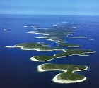
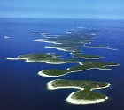
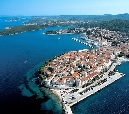
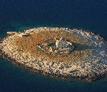

Dobrodošli na ostrvo Hvar
 Hvar (čakavski Hvor, ili For, grčki: Φάρος, Faros) je ostrvo u Hrvatskoj, ispred istočne obale Jadranskog mora. Pripada skupu srednjodalmatinskih ostrva.
 Hvar (čakavski Hvor, ili For, grčki: Φάρος, Faros) je ostrvo u Hrvatskoj, ispred istočne obale Jadranskog mora. Pripada skupu srednjodalmatinskih ostrva.
Ostrvo Hvar je vodeći u savremenom čakavskom pesništvu po razvedenosti savremenog dijalektalnog pesništva, a poznata su imena: Tin Kolumbić, Marin Franičević-Pločar, Jure Franičević-Pločar, Pere Ljubić, Lucija Rudan, Rajka Anđelić Maslovarić, Tatjana Radovanović, Mirko Barbarić, Zlatan Plenković, Sibe Miličić, Miki Bratanić... Od 2004. godine održava se književna manifestacija Susret čakavskih pesnikinja ostrva Hvara posvećena pesništvu na čakavskom narečju ostrva Hvara, autorke čijih su pesama žene. Križna proces na Hvaru je 2009. godine, kao nematerijalna kulturna baština, postala UNESCO-va svetska baština. Hvar je dao mnoge poznate rimokatoličke ličnosti, autore i velikodostojnike: Tomislav Koljatić Maroević, Jordan Zaninović, Šime Ljubić, Nikola Dominik Budrović, Jordan Kuničić, Rajmund Kupareo, Juraj Carić, Estanislao Esteban Karlic, Jorge Novak...
Hvar su posetile mnoge poznate osobe kao što su: car Franjo Josip I., Clint Eastwood, Michael Douglas, Catherine Zeta-Jones, John Malkovich, Brad Pitt, Jodie Foster, Eva Longoria, Gwyneth Paltrow, Steven Spielberg, George Clooney, Jack Nicholson, Kevin Spacey, Sean Connery, Daniel Craig, Pierce Brosnan, Andre Agassi, Jennifer Capriati, Gabriela Sabatini, David Beckham, Bernie Ecclestone, Eddie Jordan, Michael Schumacher, Bill Gates, Roman Abramovič, Beyonce, Jay-Z i dr.